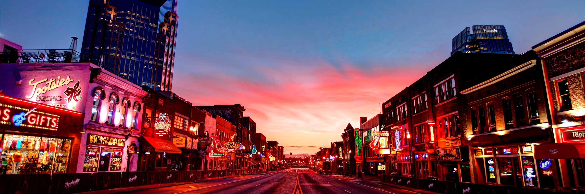
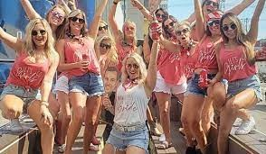

Nashville is one of the most popular destinations for bachelorette parties in the United States. The city
offers a unique blend of culture, entertainment, and southern charm that appeals to brides-to-be and their
friends.
Whether you are looking for a relaxing getaway, a musical adventure, or a wild night out, Nashville has
something for
everyone.
A bachelorette party in Nashville can be as diverse and customized as you want it to be. You can choose from
a variety of activities, such as pedal tavern tours, country music museums, spa days, honky tonk bars, and
more. You
can also explore the different neighborhoods of the city, each with its own vibe and attractions. No matter
what you
do, you will be surrounded by friendly locals, delicious food, and amazing music. Nashville is a city that
knows how to
have fun and make you feel welcome.
```

